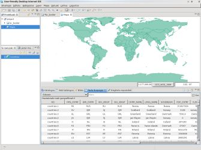
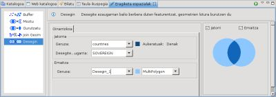
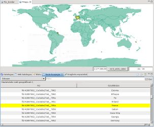

Desegin eragiketa
Aukeratutako ezaugarriagatik batutako eta fusionatutako Featureak dituen geruza berri bat sortzen du.
Eragiketa honek bai eskuz aukeratutako Featurekin, bai lehenik aukeratutako Geruzan dauden Feature guztiekin lan egiten du.

Erabilera adibidea
Eragiketa Espazialen Bistara joan, eta Desegin aukeratu Eragiketen hedatze zerrendatik.
Desegin eragiketaren sarrera espezifikoen aukerak agertuko dira.
- Jatorriko Geruza aukeratu: Geruzaren hedatze zerrendan, desegin nahi duzun Geruza aukeratu. Lehenik, Geruzen Bistan hautatutako Geruza izango da aukeratua.
- Desegite Ezaugarria aukeratu: Desegite Ezaugarriaren hedatze zerrendan, geruza desegiteko erabiliko den Featurearen Ezaugarria aukeratu.
- Emaitza Geruza aukeratu: Emaitza Geruzaren karratuan, sortu nahi den Geruzaren izena aukeratu Desegin eragiketaren emaitza edukitzeko. Lehen izen bat proposatuko da Geruza horrentzat.

- Eragiketa burutu: Exekutatu botoia sakatu Bistako tresnen barran eta eragiketa hasiko da.
Emaitza honen antzeko zeozer izango da:

(c) Copyright (c) 2004-2008 Refractions Research Inc. and others.
{kind=link}
{kind=link}
{kind=link}